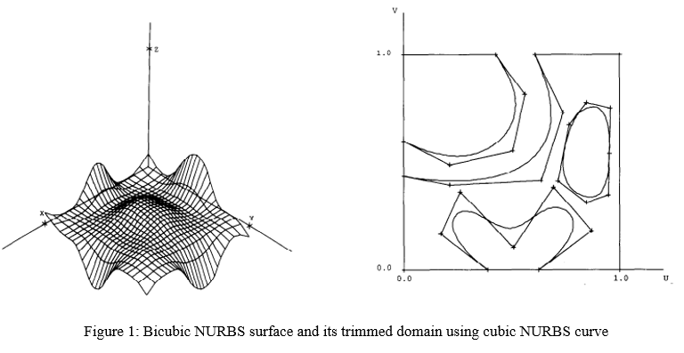
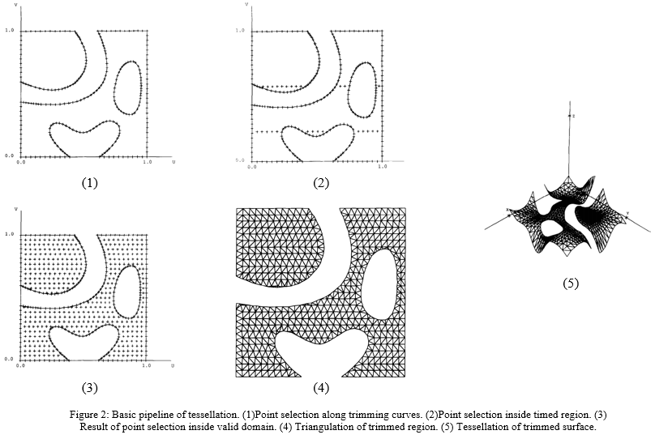

After a short discussion with @starseeker and @brlcad, they give me some suggestions about how to do the test and verification, here I will make a summary.
The primary task is to check the mathematical accuracy of the raytracing results. Since we have the thickness for solid model, it should always have the volume no matter it is thin or thick.
The related tool used in such case is *gqa*, a BRL-CAD tool that will calculate the volume of objects using raytracing. It works by shooting grids of rays from the three-axis aligned directions. For example, we have a *shpere shell* which we can calculate a volume by using pure math formula: Volume(sph_outer) - Volume(sph_inner). Besides, using *gqa* we can also get a ray traced calculated result. If without any errors, the two values should be same.
After the numerical test, we also need to do more nasty test, there is a surface in the repo(src/librt/tests/extreme_ssi_test.g), but at the beginning, we need to start with plate and sphere. With regard to the models used in the test of plate mode NURBS ray tracing, we also need more complex examples, like NURBS surface with trimmed curves, two surfaces joined at a seam, a high-order surface, a simple flat surface with vary thicknesses and so on.
Still having lots of work to do..Cheer up..
This is a paper about NURBS tessellation published in 1995, it introduced a very efficient way to map triangulated parameter spaces into 3D and generate tessellated surface with given approximation error bound.
Since it's not an easy job to render NURBS surface directly on modern graphic device, usually we need to transform it into a renderable(like polygonal) representation. This transformation can be either performed in a preprocessing step, at the cost of losing the capability to edit the surfaces, or on the fly during rendering.
The methods used in tessellation can also be seperated into two categories. The first one is about given a model space tolerance value, the algorithm triangulates the parameter space domain of the trimmed surface such that the 3D planar approximation obtained by mapping 2D triangles onto the surface deviates from the trimmed surface by no more than the tolerance value. The second one directly operates on the 3D surface by approximating surface patches with given errors bound. Because it is more complicated, I will not give more details here, please refer to other materials.
As shown in Figure 1, a NURBS surface with its trimming curves defined in parameter space, I will summerize this paper in the following steps and illustrate how to generate the trimmed surface. The basic idea is to sample points in valid parameter space and triangulate all the samples to get triangles in 2D domain, and then map them back into 3D.
Please note that, the procedures (1)-(4) in Figure 2 correspond to Step 2-5 illustrated below.
Generally speaking, this pipeline is very clear, and it should be easy to implement, so I will try to integrate this algorithm into BRL-CAD later after discussion with my mentor.
Besides, here is a link that generally introduces several tessellation methods used in practice.
Previously, I have posted an E-mail in the mail-list about the difference between subdivision(surface tree subdivision in 'opennurbs_ext.cpp') and tessellation(about line 59 in 'nurb_tess.c' and about line 595 in 'bspline.cpp') of NURBS implemented in BRL-CAD, but now I have figured it out and make a short clarification of it here.
Please refer to the figure above, it is the result of subdivision(recursive depth is 5), actually, the algorithm used is just to split parameter space(u and v) into half recursively and check if it is valid when doing a dichotomy. The purpose here is only for rendering, to be more precise, it even can not be considered as subdivision.
Besides, the old implementation of tessellation is similar as above, but just with pre-computing the largest edge size in parameter space and then taking the edge size as a step to split the u and v space.
{kind=link}